La Reserva de La Carpintera, Costa Rica
Pura reserva.
Coffee grown the traditional way by one family inside a natural reserve.
La Reserva de La Carpintera is a natural reserve.
It is protected cloud forest on the hills above Tres Ríos, a short drive from San José. It joins the forests of the Talamanca mountains to those of the central volcanoes, so wildlife can move between them, and the streams that rise here supply the towns below. Our coffee is grown inside it.
- Protected since
- 1976
- Size
- 2,391 hectares
- Birds
- 187 species recorded
- Mammals
- 31 species recorded
- Water
- About 30 streams and rivers begin here
- Forest
- Cloud forest, rising to 1,800 m
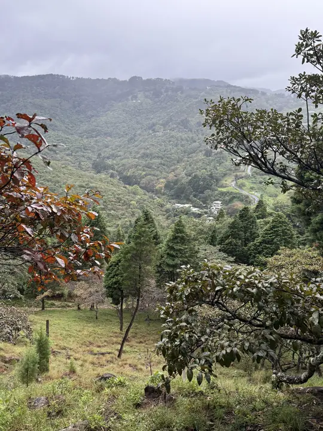
Walk the reserve
Tap a photograph to spinSwipe to spin
What clean means here
Five reasons. Swipe across.
-
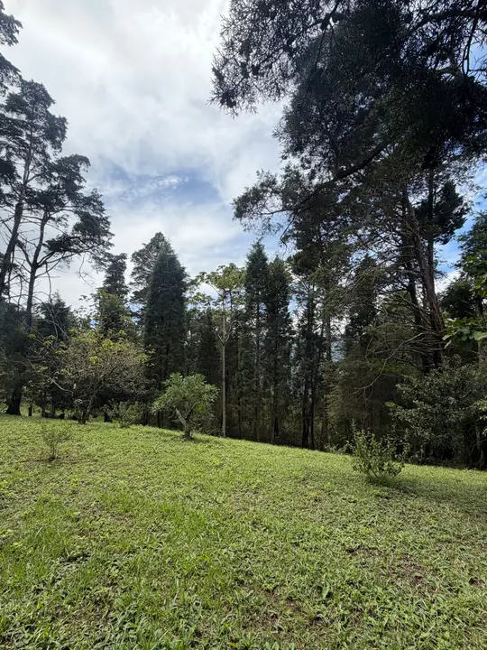
Nothing synthetic goes on the land
The farm is worked the traditional way, as it always has been. No synthetic pesticides, no herbicides, no chemical fertiliser. Inside a reserve, it is the only way we would farm.
-
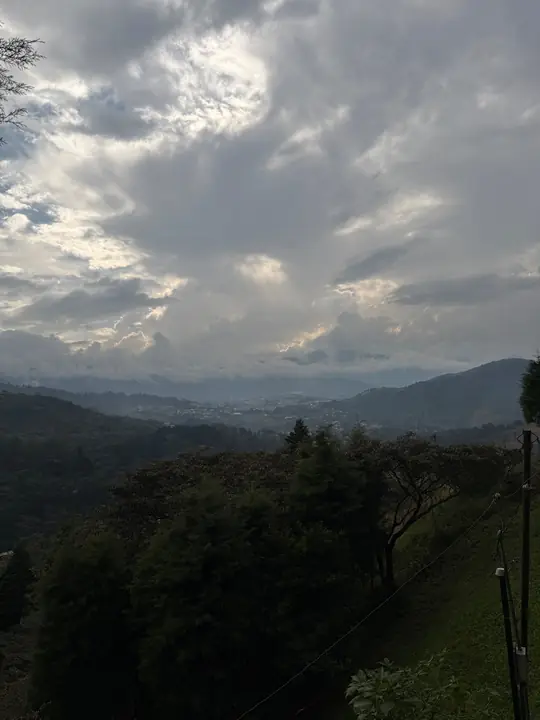
The water starts here
Around thirty streams and rivers begin in this reserve, and the towns below drink from them. Whatever goes on our soil ends up in that water. So the farm stays clean, and so does the cup.
-
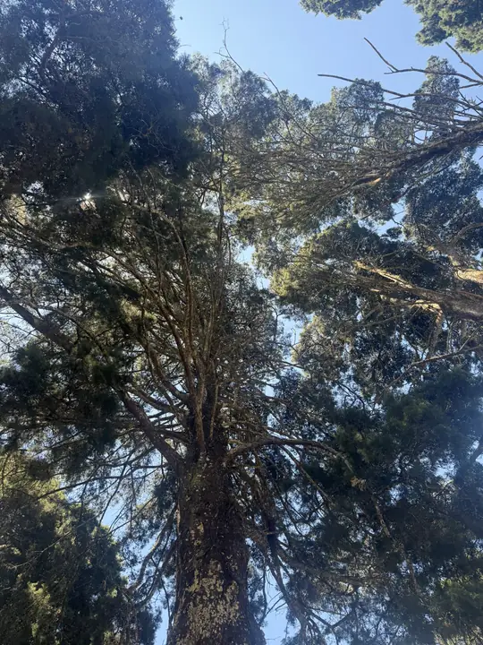
A forest full of life, right beside the coffee
Biologists have counted 187 kinds of birds and 31 kinds of mammals in La Carpintera, along with the orchids and bromeliads that grow on the trunks. A farm that sprays loses its neighbours. Ours keeps them.
-
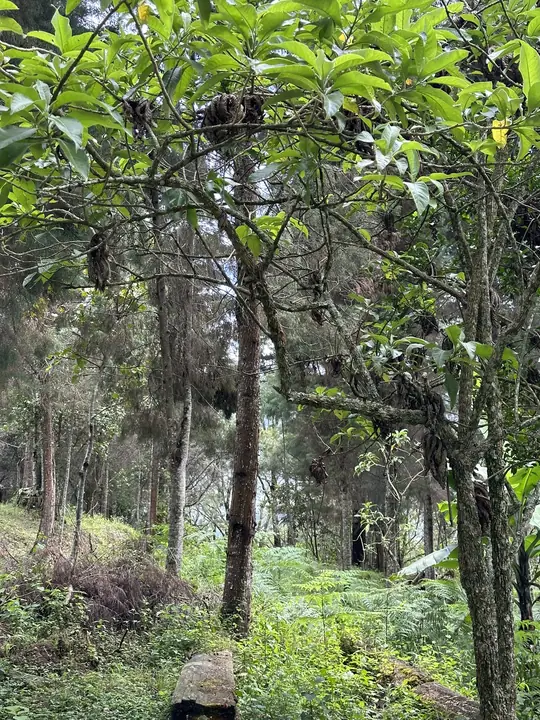
Volcanic soil, cool air, slow ripening
The reserve sits high in Tres Ríos, beside the Irazú volcano, in cloud for much of the year. The soil is rich in minerals and the cherries ripen slowly, which is where the sweetness comes from. None of it is added.
-
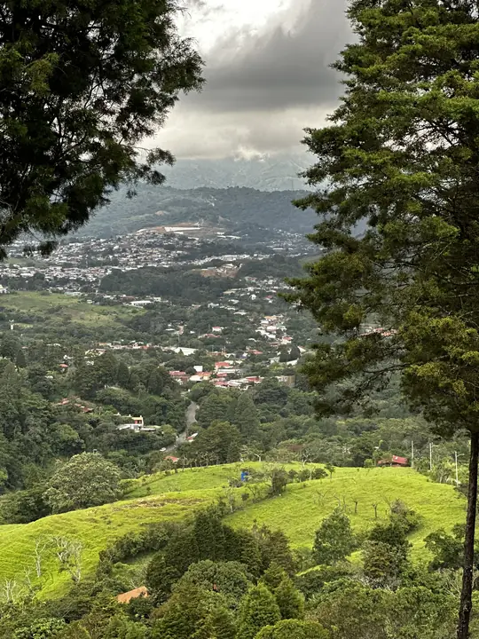
One family, one farm, nothing bought in
Dozens of coffee farms around Tres Ríos have been lost to the growing city, which you can see from our porch. This one is still here. Everything in the bag was grown on it, so we know exactly what went into it.
And the region is known as the Bordeaux of Costa Rica.
The reserve lies in Tres Ríos, a small, high, volcanic coffee region with a long reputation. Its coffee is known for a delicately balanced acidity and a soft, sweet cup: orange and plum, a little toffee, a clean finish.
- Farming
- Traditional, no pesticides
- Grown
- Inside a natural reserve
- Region
- Tres Ríos, Costa Rica
- Soil
- Volcanic, enriched by Irazú
- Altitude
- High-grown, above 1,200 m
- Harvest
- Once a year, December to March
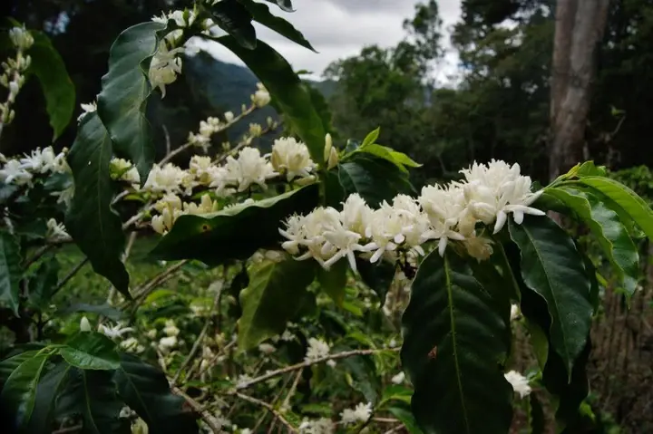
From branch to cup
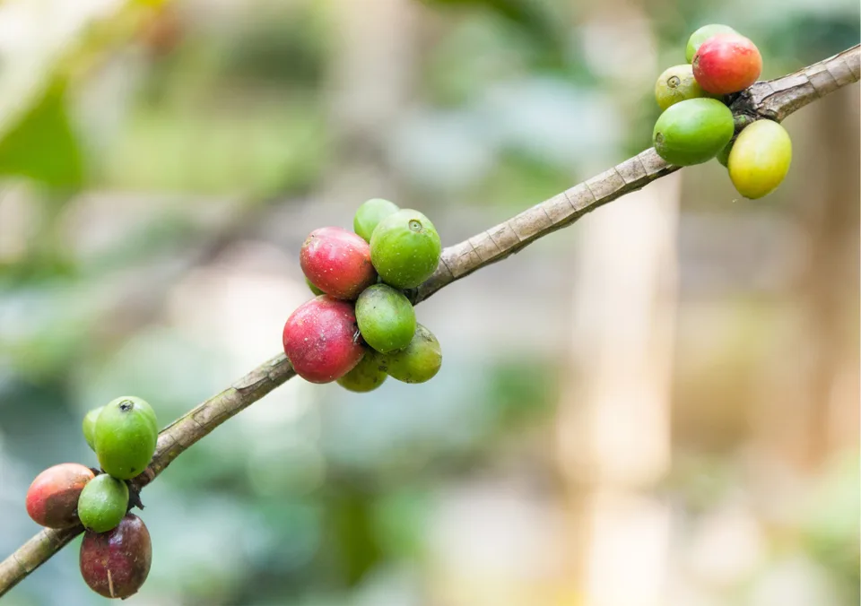
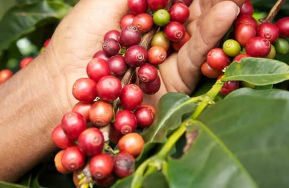
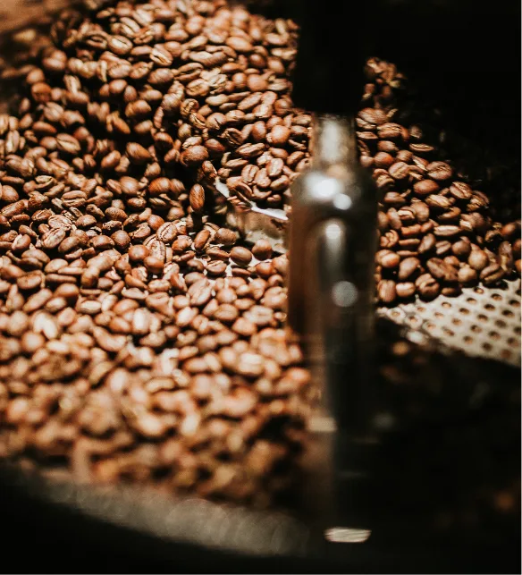
Clean coffee. Honest price.
This is not a luxury coffee, and we don’t price it like one. It is clean, naturally grown coffee for every morning, and a bag costs what good coffee costs.
What is limited is the amount. A farm inside a reserve can only grow so much, and we will not clear forest to grow more. When a harvest is gone, the next is a year away.
One day in the reserve
Morning to night. Tap a thumbnail.Morning to night. Swipe the photo.
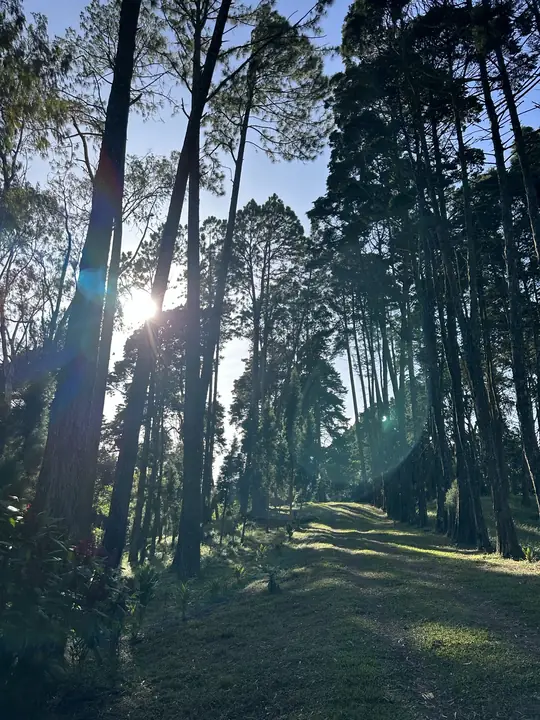
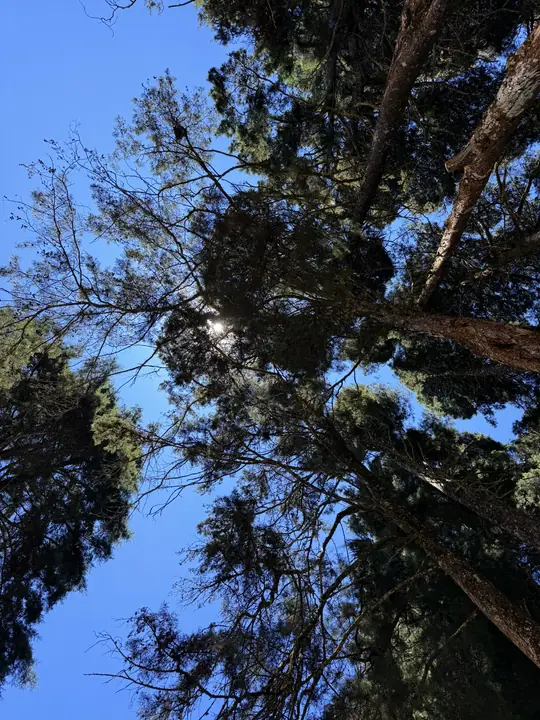
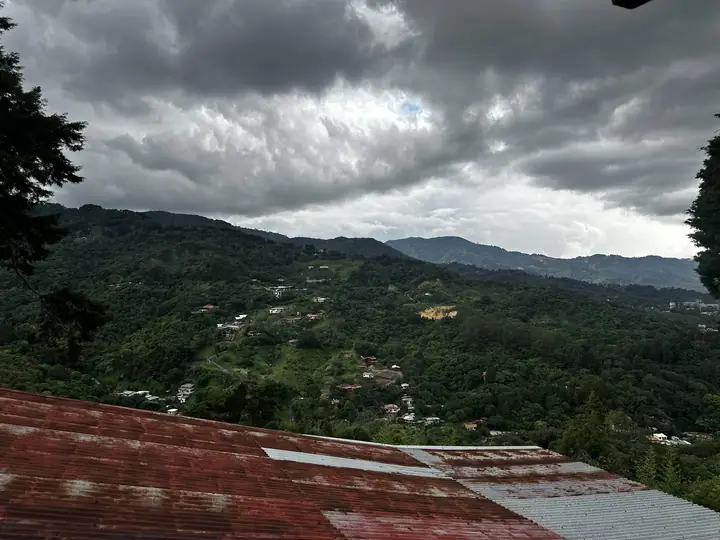
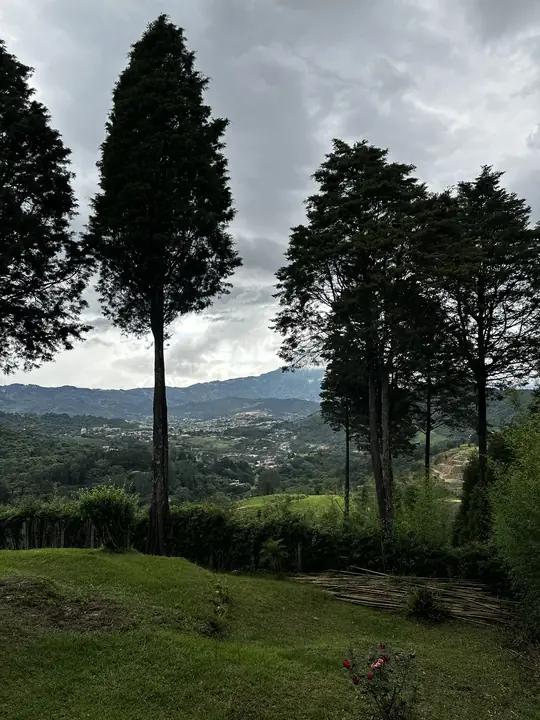
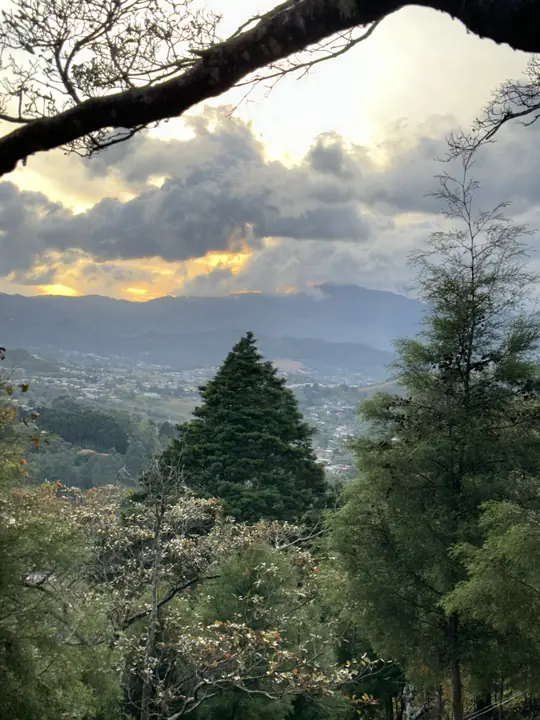
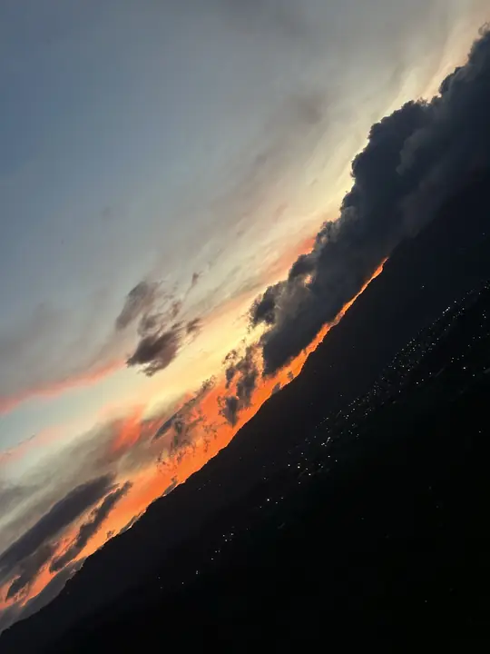
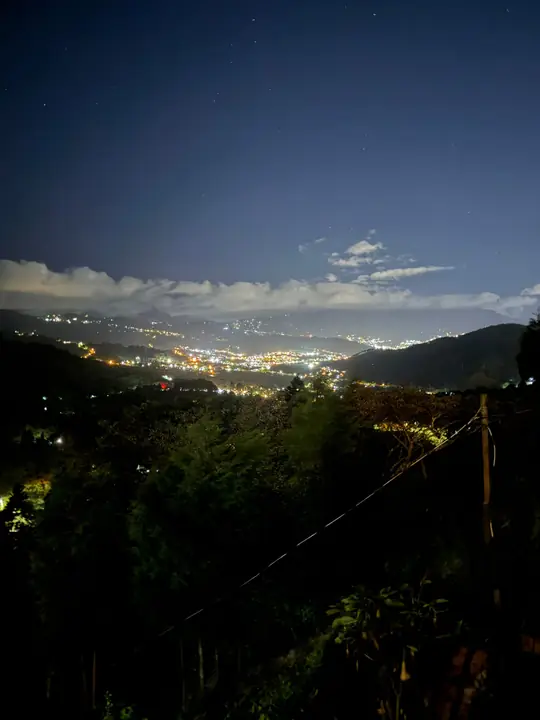
We look after this corner of the reserve. The coffee is how we share it.
We’re a Costa Rican family, and this is the place we love most: the cypress, the bromeliads, the last light over the valley. We farm it the way you look after something you mean to hand on, which is why nothing synthetic goes near it.
Field notes
This harvest is small. Ask for a bag.
Write to us and we’ll tell you what’s available.
Email us about this harvest